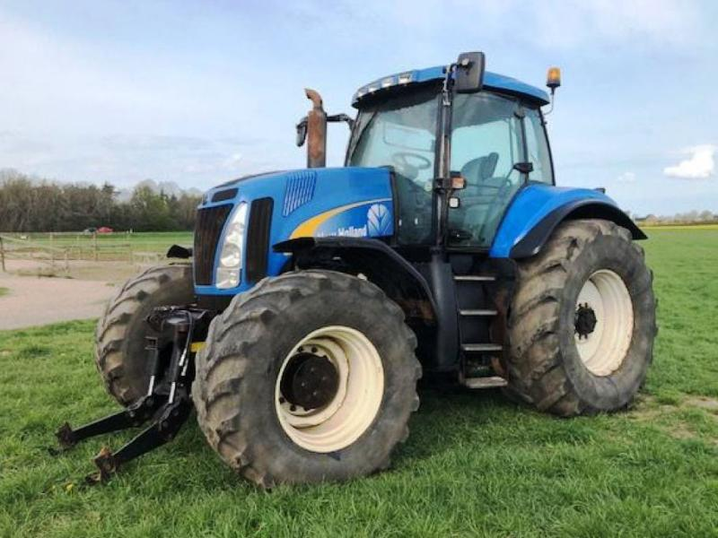

New Holland T8040

New Holland T8040 – це високопродуктивний трактор тягового класу 5,0, призначений для виконання важких польових робіт та агрегатування з широкозахопними знаряддями. Машина оснащена потужним двигуном, повнопривідною ходовою частиною та сучасною трансмісією Full PowerShift, що забезпечує високу ефективність у полі та під час транспортування. Конструкція трактора орієнтована на великі аграрні господарства, де потрібна надійна техніка для інтенсивної експлуатації.
| Параметр | Значення |
|---|---|
| Клас тяги | 5,0 |
| Тип ходової частини | колісний |
| Колісна формула | 4х4 (WD) |
| Тип рами | цільна (важка сталева рама) |
| Основне призначення | важкі польові роботи, глибока оранка, робота з широкозахопними агрегатами |
| Параметр | Значення |
|---|---|
| Модель | Cummins / FPT (New Holland) |
| Тип двигуна | 6-циліндровий, турбодизель з інтеркулером, Common Rail |
| Спосіб охолодження | рідинне (водяне) |
| Розташування циліндрів | рядне, вертикальне |
| Діаметр циліндра/хід поршня | 114 мм / 145 мм |
| Робочий об’єм | 8,3 л (8268 см³) |
| Номінальна потужність | 223 кВт (303 к.с.) / Макс: 332 к.с. |
| Номінальні оберти | 2200 об/хв |
| Система пуску | електростартер |
| Питома витрата палива | 200–210 г/кВт·год |
| Параметр | Значення |
|---|---|
| Муфта зчеплення | мокра багатодискова з гідравлічним приводом |
| Тип КПП | Full PowerShift (Ultra Command™) |
| Кількість передач | 18 вперед / 4 назад (опційно 19х4 для 50 км/год) |
| Кількість діапазонів | перемикання всіх передач без розриву потужності |
| Діапазон швидкостей (вперед) | 2,0 – 40,0 км/год |
| Діапазон швидкостей (назад) | 2,4 – 14,0 км/год |
| Вал відбору потужності | задній незалежний, 1000 об/хв (з хвостовиком 1 3/4") |
| Діапазон | Передача | Швидкість, км/год | Передаточне число | Тягове зусилля, кН |
|---|---|---|---|---|
| Польовий (Low) | 1 | 3,30 | 290,5 | 115,00* |
| Польовий (Low) | 2 | 3,80 | 252,2 | 115,00* |
| Польовий (Low) | 3 | 4,40 | 218,8 | 115,00* |
| Польовий (Low) | 4 | 5,10 | 188,8 | 110,40 |
| Польовий (Low) | 5 | 5,80 | 164,1 | 96,00 |
| Польовий (Low) | 6 | 6,70 | 142,5 | 83,40 |
| Польовий (Medium) | 7 | 7,70 | 124,1 | 72,60 |
| Польовий (Medium) | 8 | 8,90 | 107,4 | 62,80 |
| Польовий (Medium) | 9 | 10,20 | 93,6 | 54,70 |
| Польовий (Medium) | 10 | 11,80 | 81,3 | 47,50 |
| Польовий (Medium) | 11 | 13,50 | 70,8 | 41,40 |
| Польовий (Medium) | 12 | 15,60 | 61,5 | 36,00 |
| Транспортний (High) | 13 | 18,20 | 52,6 | 30,80 |
| Транспортний (High) | 14 | 21,00 | 45,6 | 26,70 |
| Транспортний (High) | 15 | 24,10 | 39,7 | 23,20 |
| Транспортний (High) | 16 | 27,80 | 34,4 | 20,10 |
| Транспортний (High) | 17 | 32,10 | 29,8 | 17,40 |
| Транспортний (High) | 18 | 40,00** | 24,1 | 14,10 |
| Параметр | Значення |
|---|---|
| Тип коліс | пневматичні шини (радіальні) |
| Марка шин | передні: 600/70 R30; задні: 710/70 R42 |
| Радіус ведучого колеса | 1,030 м (для задніх коліс 710/70 R42) |
| Кількість коліс | 4 (часто комплектується спареними задніми колесами для зменшення тиску на ґрунт) |
| Ведучі мости | обидва (передній міст з підвіскою Terraglide™ та системою автоматичного управління блокуванням диференціалів) |
| Режим | Витрата |
|---|---|
| Під час роботи з навантаженням | 42,0 – 54,0 кг/год |
| Під час холостих переїздів | 14,0 – 18,5 кг/год |
| Під час зупинок (холостий хід) | 3,2 – 4,5 кг/год |
| Параметр | Значення |
|---|---|
| Маса експлуатаційна | 9750 – 10250 кг (без баласту) / до 13000 кг (макс. допустима) |
| Довжина / Ширина / Висота | 5830 мм / 2490 мм / 3330 мм |
| Колія / База | 1500–2200 мм / 3005 мм |
| Дорожній просвіт | 550 мм |
| Мінімальний радіус повороту | 5,8 м (з системою SuperSteer™ — 5,0 м) |
| Кінематична довжина | 1,55 м |
| Тип навісного пристрою | задній гідравлічний, триточковий (Кат. IVn/III) |
| Об’єм паливного баку | 682 л |
| Параметр | Значення |
|---|---|
| Особливості кабіни | Deluxe, підресорена, з рівнем шуму 71 дБа; система клімат-контролю, кольоровий монітор IntelliView™ II, круговий огляд 360° |
| Гальма | робочі — мокрі багатодискові з гідравлічним приводом; стоянкові — незалежні дискові; автоматичне керування гальмуванням причепа |
| Електрообладнання | акумуляторна батарея 12 В (176–200 Агод), генератор високої потужності 175 А (опційно 200 А) |
| Начіпний пристрій | задній триточковий гідравлічний (Кат. IVn/III) з електронним силовим та позиційним регулюванням, вантажопідйомність — 10 203 кг |